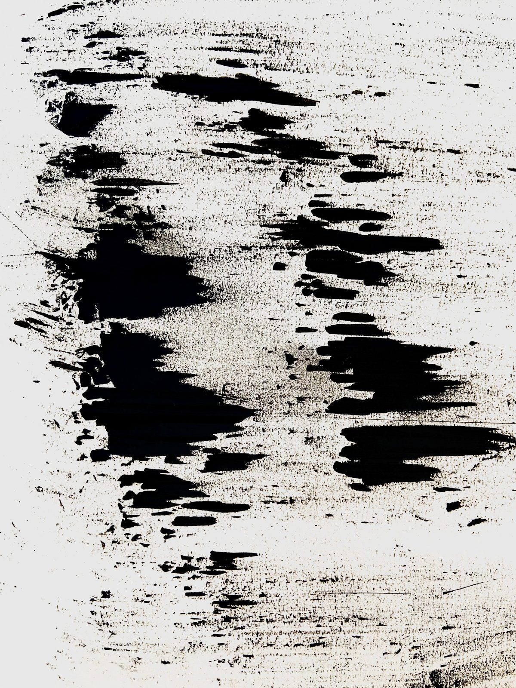
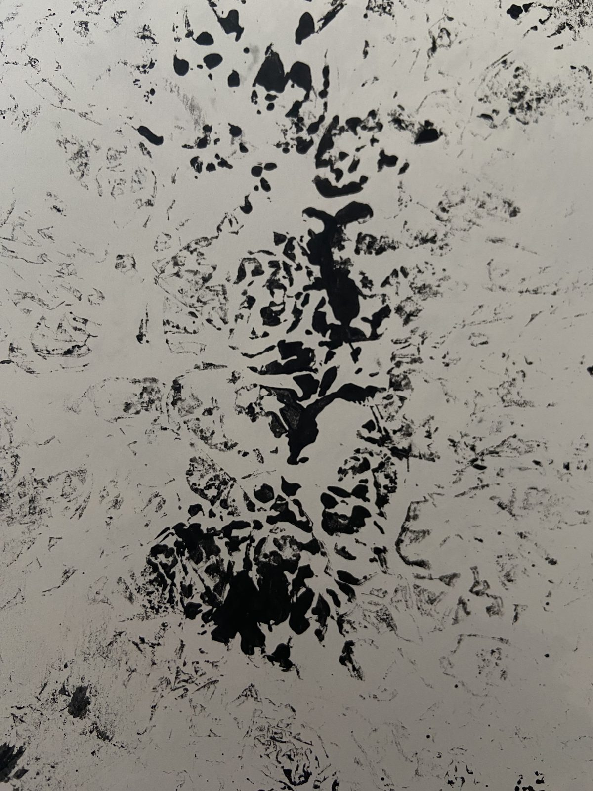

<section id="tinta" data-transition="fade" style="background:#171515;color:#F2EEE8;font-family:'Bricolage Grotesque', Arial, sans-serif;padding:128px;display:flex;flex-direction:column;gap:48px">
<h2 style="font-size:72px;font-weight:800;letter-spacing:-2px;line-height:1.1">Tinta y gesto</h2>
<div style="display:flex;gap:24px">
<div style="flex:1;display:flex;flex-direction:column;gap:12px"><p style="font-family:'IBM Plex Mono', 'Courier New', monospace;font-size:24px;color:#BDB6AF">2026-06</p></div>
<div style="flex:1;display:flex;flex-direction:column;gap:12px"><p style="font-family:'IBM Plex Mono', 'Courier New', monospace;font-size:24px;color:#BDB6AF">2026-08</p></div>
<div style="flex:1;display:flex;flex-direction:column;gap:12px"><p style="font-family:'IBM Plex Mono', 'Courier New', monospace;font-size:24px;color:#BDB6AF">2026-09</p></div>
<div style="flex:1;display:flex;flex-direction:column;gap:12px"><p style="font-family:'IBM Plex Mono', 'Courier New', monospace;font-size:24px;color:#BDB6AF">2026-10</p></div>
</div>
<aside>Agrupación provisional: las obras en negro sobre blanco podrían ser una serie. Nombre de serie a decidir con Patricia.</aside>
</section>
